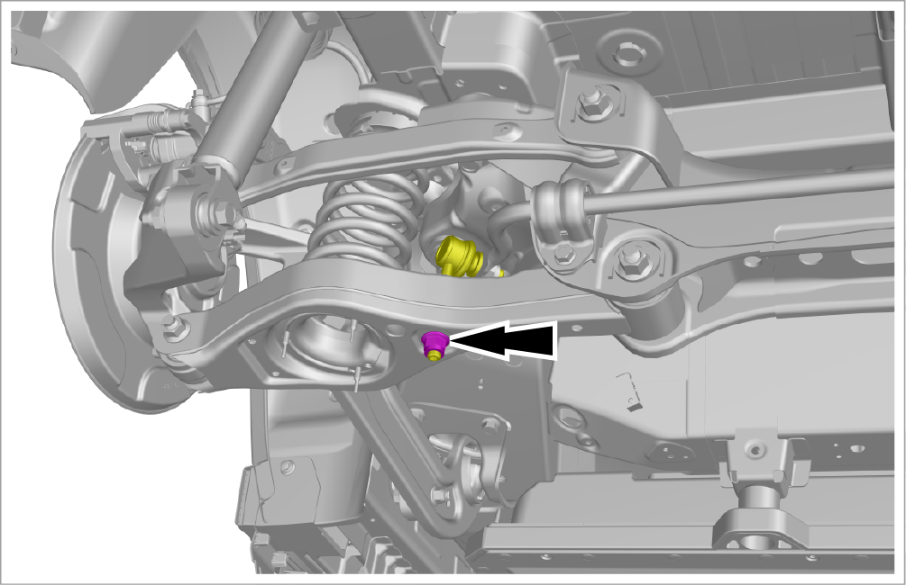
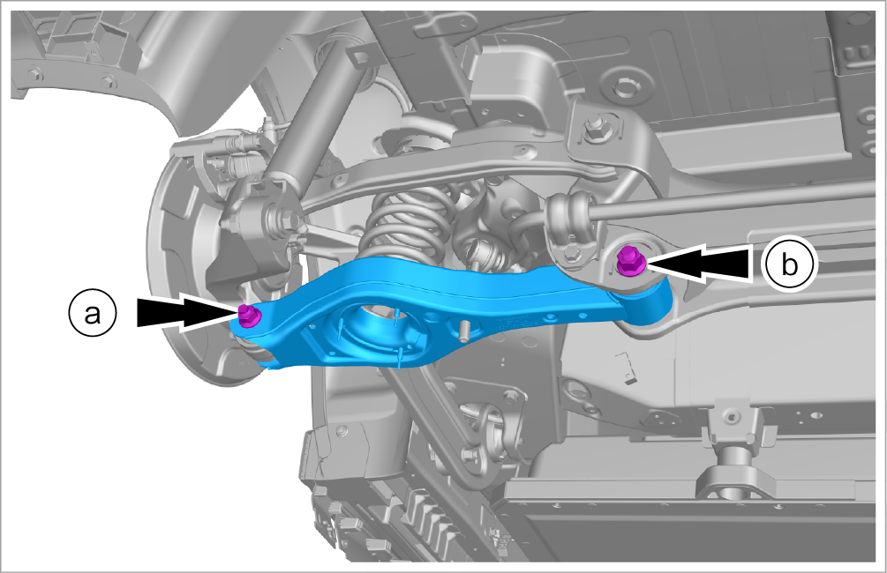
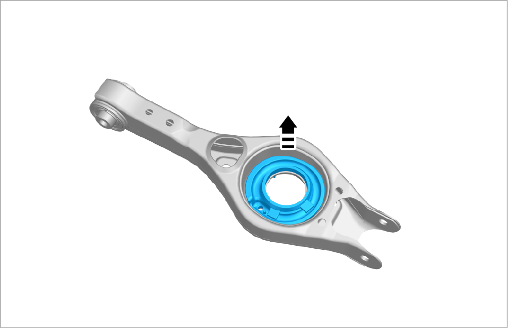

Removal and installation of rear suspension lower arm assembly
Removal

-
Remove the rear left wheel assembly. Refer toRemoval and installation of wheel assembly
-
Remove 1 fixing bolt, and detach the rear stabilizer bar tie rod and ball joint assembly from the rear left suspension lower arm assembly.
-
Tightening torque: 90±5 N•m

-
-
Remove the rear suspension lower arm assembly and the rear coil spring lower buffer pad.
-
Remove 1 fixing bolt and nut, and detach the rear suspension lower arm assembly from the rear left steering knuckle.
CautionWhen removing the connecting bolt of the rear suspension lower arm assembly, support the lower arm with a lifter first, and clamp the coil spring with an auxiliary equipment, and then slowly lower the arm to prevent the spring from popping out.-
Tightening torque: 200±10 N•m
-
-
Remove 1 fixing bolt and take out the rear suspension lower arm assembly and the rear coil spring lower buffer pad.
-
Tightening torque: 200±10 N•m
-

-
-
Remove the rear coil spring lower buffer pad and take out the rear suspension lower arm assembly.

Installation
-
Install it in the reverse order of removal.
CautionWhen installing the eccentric bolt, fix the eccentric bolt with a wrench to prevent it from rotating with the nut. -
Finish four-wheel alignment after installation. Refer toInspection and adjustment of four-wheel alignment